Systems Manager Patch Manager
Windows ServerをSystems Managerのマネージドノードとして登録する
Maintenance Window、Patch Group、Scan・Install、S3ログおよび適用後確認まで実機証跡で整理する
Patch Manager・メンテナンスウィンドウ構成概要
1. 本資料の目的
本資料は、AWS Systems Managerを初めて操作する方が、Windows Serverのパッチ適用に使用する各機能の役割と作成順序を体系的に理解することを目的とする
本書では、次の構成を対象とする
- Windows Server 2022のEC2インスタンス
- Systems Manager Patch Manager
- AWS定義済みパッチベースラインおよび必要に応じたカスタムパッチベースライン
- Patch Groupタグによる対象管理
- Maintenance Windowsによる定期実行
AWS-RunPatchBaselineによるScanおよびInstall
2. まず知っておく全体像
Patch Managerでは、「どのパッチを適用するか」と「いつ、どのEC2へ実行するか」を別々の設定で管理する
| 決めること | 使用する機能 |
|---|---|
| どのパッチを承認・拒否するか | パッチベースライン |
| どのEC2がそのルールを使うか | Patch Group |
| いつ実行するか | メンテナンスウィンドウ |
| どのEC2を実行対象とするか | メンテナンスウィンドウのターゲット |
| 何を実行するか | メンテナンスウィンドウのタスク |
| パッチを調査するか、適用するか | AWS-RunPatchBaselineのOperation |
今回の構成は次の関係になる
パッチベースライン
└─ Patch Group「p-pm-window」を関連付け
↑
EC2タグ：Patch Group = p-pm-window
↓
メンテナンスウィンドウのターゲット
└─ タグ条件に一致するEC2を選択
↓
メンテナンスウィンドウのタスク
└─ AWS-RunPatchBaseline（ScanまたはInstall）3. 構成図：Systems ManagerによるWindowsパッチ管理

本図は、ご提供いただいたAWS Systems Manager構成図を基に、今回のWindowsパッチ管理で使用する機能だけを抽出し、日本語の役割説明と作成順序を追記したものである
図の読み方
- Patch Managerで使用するWindows用パッチベースラインを決定する。今回の検証では
AWS-DefaultPatchBaselineを使用し、組織独自の承認条件が必要な場合だけカスタムパッチベースラインを作成 - Maintenance Windowsで実行日時と実行可能な時間帯を決める
- メンテナンスウィンドウのターゲットに、Patch Groupタグの条件を登録
- Windows EC2へ同じPatch Groupタグを付与し、対象ノードとベースラインを関連付ける
- Run Commandタスクとして
AWS-RunPatchBaselineを登録 - 初回は
Operation=Scanで不足パッチとコンプライアンスを確認
中央のManaged node（Windows EC2）では、SSM Agentがコマンドを実行し、IAMロールがAWSサービスとの通信権限を提供する。処理後はComplianceで適用状況を確認し、Fleet Managerでノードの接続状態と基本情報を確認する
図の作成根拠
お客様提供のAWS Systems Manager構成図を参考に、本手順で使用する機能と役割を追記
機能の定義は出典：AWS Systems Manager Patch Manager、出典：Patch groups、出典：Maintenance Windowsに基づく
4. 用語の説明
4.1 AWS Systems Manager
EC2やオンプレミスサーバーを一元管理するAWSサービス群。本手順では、Fleet Manager、Run Command、Patch Manager、Maintenance Windowsを使用する
4.2 SSM Agent
Windows Server内で動作し、Systems Managerからの命令を受け取るソフトウェア。SSM Agentが未導入、停止中またはSystems Managerへ通信できない場合、Run CommandやPatch Managerは使用できない
4.3 マネージドノード
SSM Agent、IAM権限および通信経路が準備され、Systems Managerから管理できる状態のサーバー。本手順ではWindows Server 2022のEC2インスタンスが該当する
4.4 Patch Manager
マネージドノードのパッチ不足状況を調査し、承認されたパッチを適用するSystems Managerの機能。AWSが個々のパッチを利用者環境でテストするわけではないため、適用前に対象、スケジュール、承認条件および再起動影響を確認する
4.5 パッチベースライン
「どのパッチを適用対象とするか」を定める判定基準。Windows Serverでは、製品、分類、MSRC重要度、自動承認までの日数、個別の承認・拒否パッチ等を設定する。ベースライン自体はスケジュールではない
4.6 カスタムパッチベースライン
利用組織が自ら承認条件を設定したベースライン。テスト期間、除外対象、コンプライアンス判定を明示できる。AWS公式ドキュメントは、コンプライアンスの基準をより明確に制御するため、カスタムベースラインの作成を推奨している
4.7 Patch Group
同じパッチベースラインを使うノードをまとめる論理的なグループ。独立したAWSリソースではなく、EC2等へタグを付与して定義する
キー：Patch Group
値：p-pm-windowタグキーは大文字・小文字を区別し、Patch GroupまたはPatchGroupを使用する。EC2インスタンスメタデータのタグを有効化している場合は、空白のないPatchGroupを使用する
4.8 メンテナンスウィンドウ
パッチ適用やソフトウェア更新など、サーバーへ影響を与える作業を実行できる時間帯とスケジュールを定義する機能。複数ノードの対象選択、同時実行数、エラー上限および実行履歴をAWS上で管理できる
4.9 ターゲット
メンテナンスウィンドウで「どのノードに実行するか」を定める設定。インスタンスID、タグ、AWS Resource Groups等で指定できる。タグ指定では、実行時点で条件に一致するノードが対象となる
4.10 タスク
メンテナンスウィンドウで「何を実行するか」を定める設定。今回はRun CommandタスクとしてAWS-RunPatchBaselineを登録する
4.11 AWS-RunPatchBaseline
パッチのScanまたはInstallを実行するAWS管理のSSMコマンドドキュメント。これ自体はパッチベースラインではない。適用するベースラインは、Patch Groupの関連付けまたはOSのデフォルト設定から決定される
| Operation | 動作 | パッチ適用 | 再起動 |
|---|---|---|---|
Scan |
不足パッチとコンプライアンスを調査 | しない | しない |
Install |
承認済みの不足パッチをインストール | する | RebootOptionに従う |
4.12 コンプライアンス
パッチベースラインで承認されたパッチが、対象ノードへ適用されているかを表す判定結果。Scan後のMISSINGやNonCompliantは、不足パッチを正常に検出した結果であり、コマンドの失敗を意味しない
4.13 SuccessとWindows Updateの表示
Run CommandのSuccessは、AWS-RunPatchBaselineがエラーなく終了したことを示す。Windows Updateに表示されるすべての更新が適用済みであることを保証するものではない
Patch ManagerのCompliantやMissingCount=0は、使用したパッチベースラインで承認された更新に不足がないことを示す。Windows Updateは、ベースラインの分類、重要度または承認待機日数に含まれない更新も表示するため、両方の画面で結果が異なる場合がある
今回の検証では、AWS-DefaultPatchBaselineによるInstallがSuccess、MissingCount=0で終了した後、Windows Updateの手動確認でMicrosoft Defender Antivirusのセキュリティインテリジェンス更新KB2267602が表示された。これは頻繁に更新されるDefender定義更新であり、今回のベースラインで承認されたOSパッチとは区別して扱う
5. メンテナンスウィンドウの構成要素
| 構成要素 | 意味 | 今回の例 |
|---|---|---|
| Name | 識別するための名前 | p-pm-mw-windowsupdate |
| Schedule | 実行日時または頻度 | 検証時刻で試験後、承認済み本番日時へ変更 |
| Schedule timezone | スケジュールのタイムゾーン | Asia/Tokyo |
| Duration | メンテナンスウィンドウを開く時間 | 【構築時確認】 |
| Cutoff | 終了の何時間前から新規タスクを開始しないか | 【構築時確認】 |
| Target | 実行対象 | Patch Group=p-pm-window |
| Task | 実行内容 | AWS-RunPatchBaseline |
| Operation | ScanまたはInstall | 初回テストはScan |
| RebootOption | Install後の再起動方針 | 本番適用前に承認を得て確定 |
| Concurrency | 同時実行台数または割合 | 検証時は1台 |
| Error threshold | 他ノードへの実行を停止するエラー数または割合 | 検証時は1エラーで停止 |
メンテナンスウィンドウは「時刻だけ」の設定ではない。スケジュール、ターゲット、タスクの3つが揃って初めて実行可能になる
6. 今回の作成順序
AWS公式のコンソール手順は、「メンテナンスウィンドウ作成 → ターゲット登録 → Run Commandタスク登録」の順番である。本手順ではPatch Groupとベースラインの関係を明確にするため、次の順番とする
| 順番 | 作業 | 作成・設定するもの | 確認ポイント |
|---|---|---|---|
| 1 | 前提条件を確認 | EC2、SSM Agent、IAM、通信経路 | Fleet ManagerでOnline |
| 2 | 使用するパッチベースラインを決定 | AWS-DefaultPatchBaselineまたは承認済みカスタムベースライン |
OS、分類、重要度、承認日数 |
| 3 | Patch Groupをベースラインへ関連付け | sample-window |
値の完全一致 |
| 4 | メンテナンスウィンドウを作成 | p-pm-mw-windowsupdate |
スケジュール、タイムゾーン、Duration、Cutoff |
| 5 | ターゲットを登録 | Patch Group=p-pm-window |
タグ条件を記録 |
| 6 | EC2へタグを付与 | Patch Group=p-pm-window |
対象が検証EC2の1台のみ |
| 7 | Run Commandタスクを登録 | AWS-RunPatchBaseline |
登録済みターゲットを選択 |
| 8 | Scanテストを実行 | Operation=Scan |
Success、応答コード0、コンプライアンス生成 |
| 9 | 結果をレビュー | 実行履歴、パッチコンプライアンス | MISSINGは検出結果でありScan失敗ではない |
| 10 | 承認後にInstallを設定・実行 | Operation=Install |
再起動、サービス復旧、再Scan |
注意
Run Commandタスクは、通常、登録済みのメンテナンスウィンドウターゲットを選択して作成する。そのため、ターゲット登録をタスク登録より先に実施する
7. 今回の設定値
| 項目 | 設定値 | 備考 |
|---|---|---|
| リージョン | アジアパシフィック（東京）ap-northeast-1 |
今回の検証値 |
| AMI ID | ami-0e951cd6c484ba795 |
今回の検証値 |
| AMI名 | Windows_Server-2022-Japanese-Full-Base-2026.08.12 |
今回の検証値 |
| EC2インスタンス名 | Sample-mng-001 |
検証用 |
| EC2 IAMロール名 | Sample_EC2Role |
EC2からSystems Managerを利用 |
| パッチベースライン名 | AWS-DefaultPatchBaseline |
今回の検証で使用。ID pb-04ba050f612fba3a6 |
| Patch Group | sample-window |
今回の検証値 |
| メンテナンスウィンドウ名 | Sample-MW-WindowsUpdate |
今回の検証値 |
| コマンドドキュメント | AWS-RunPatchBaseline |
AWS管理 |
| 初回テスト | Operation=Scan |
パッチ適用と再起動は行わない |
| 本番適用 | Operation=Install |
承認後に実施 |
8. 初学者が間違えやすい点
- パッチベースラインはスケジュールではない。「何を適用するか」を決めるルールである
AWS-RunPatchBaselineはベースライン名ではなく、ScanまたはInstallを実行するコマンドドキュメントである- Patch Groupとターゲットは役割が異なる。今回は同じタグを両方に使う
ScanがSuccessで、不足パッチが検出された場合、ノードはNonCompliantになることがある。これはScan失敗ではないInstallはパッチ適用や再起動が発生し得るため、対象と実行時刻を承認してから実行するInstallがSuccessでも、承認済み不足パッチが0件なら新しいKBのインストールと再起動は発生しない- Patch Managerが
Compliantでも、ベースライン対象外のDefender定義更新などがWindows Updateに表示される場合がある
9. AWS公式参照先
- 出典：AWS Systems Manager Patch Manager
- 出典：Predefined and custom patch baselines
- 出典：Creating a custom patch baseline for Windows Server
- 出典：Patch groups
- 出典：Creating and managing patch groups
- 出典：AWS-RunPatchBaseline
- 出典：AWS Systems Manager Maintenance Windows
- 出典：Tutorial: Create a maintenance window for patching using the console
SSM環境設定・Patch Manager運用手順（Windows Server 2022）
作成状況：下書き／設定登録およびInstall動作確認済み、Scan単独テストと実パッチ適用は未完了
2026年9月7日から8日に取得した検証環境の画面を反映した。画面から確認できない値は推測で確定せず、【構築時確認】または【証跡未取得】とする
1. 文書の目的
Windows Server 2022のEC2インスタンスをAWS Systems Managerのマネージドノードとして登録し、Patch ManagerとMaintenance Windowsを使用してWindowsパッチを定期的に確認・適用する方法を記載する
画像の提出方針
原本画像は本書と同じフォルダへ保存し、赤枠・番号・矢印を付けた画像は、同じファイル名で注釈済みフォルダへ保存します。画像中の検証値は顧客環境の値へ読み替え、パスワード、アクセスキー、秘密鍵その他の認証情報は撮影・掲載しない
本書は、次の2部で構成する
- 事前準備：IAMロール、Windows EC2、SSM Agent、接続確認および既存S3ログ出力先の確認。SNS通知を使用する場合は関連リソースも準備
- Systems Manager設定：パッチベースライン、Patch Group、Maintenance Windows、ターゲット、Run Commandタスク、テスト実行および成功判定
2. 全体構成と各機能の役割
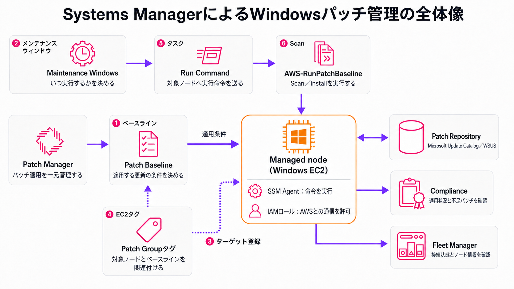
| 機能 | 役割 |
|---|---|
| SSM Agent | Windows EC2上でSystems Managerから受け取った命令を実行する |
| EC2用IAMロール | SSM AgentがSystems Managerや出力先S3へアクセスする権限を提供する |
| Patch Baseline | 適用対象とする更新プログラムの分類、重要度、承認条件などを定義する |
| Patch Group | EC2と、そのEC2へ適用するパッチベースラインを関連付ける |
| Maintenance Windows | パッチ処理を実行できる日時と時間帯を定義する |
| Maintenance Windowターゲット | Maintenance Windowsの処理対象となるEC2をタグ条件などで指定する |
| Run Commandタスク | AWS-RunPatchBaselineを実行してScanまたはInstallを行う |
| S3 | Run Commandの標準出力および標準エラーを保存する |
| Compliance | Scan／Install後のパッチ適用状況を確認する |
| Fleet Manager | マネージドノードのOnline状態、OS、SSM Agentバージョンなどを確認する |
3. 今回の検証環境と確認状況
| 項目 | 画面確認値 | 状況 |
|---|---|---|
| リージョン | アジアパシフィック（東京）ap-northeast-1 |
確認済み |
| EC2名 | Sample-mng-001 |
確認済み |
| AMI ID | ami-0e951cd6c484ba795 |
確認済み |
| AMI名 | Windows_Server-2022-Japanese-Full-Base-2026.08.12 |
確認済み |
| OS | Microsoft Windows Server 2022 Datacenter | Fleet Managerで確認済み |
| IAMロール | Sample_EC2Role |
確認済み |
| IAMポリシー | 検証環境：AmazonSSMManagedInstanceCore。お客様環境：4ポリシー |
詳細は手順4を参照 |
| SSM Agent | バージョン3.3.4851.0、Ping status Online |
確認済み |
| S3出力先 | 検証環境：sample-mw-bucket/patchmanager。お客様環境：skyarch-pid-2849-logs/patchmanager/ |
検証環境のInstall実行ログと、お客様環境の既存出力を確認済み |
| SNS通知 | 無効 | 必要な場合だけ設定 |
| Maintenance Window | Sample-MW-WindowsUpdate |
作成済み |
| スケジュール | cron(0 17 ? * THU#4 *)、タイムゾーンUTC |
毎月第4木曜17:00 UTC／翌金曜02:00 JST |
| Duration／Cutoff | 1時間／0時間 | 確認済み |
| ターゲット | PatchingTarget |
登録済み |
| ターゲット条件 | Patch Group=sample-window |
登録済み |
| Run Commandタスク | Sample-TASK-WindowsUpdate |
登録済み |
| コマンドドキュメント | AWS-RunPatchBaseline、ランタイムのデフォルトバージョン |
確認済み |
| 初回テストの推奨パラメータ | Operation=Scan、RebootOption=NoReboot、StepTimeoutSeconds=10800 |
手順書の推奨値。検証時の初回実行は誤ってInstall/NoRebootとなったためScan単独テストは未確認 |
| コマンドタイムアウト | 600秒 | 確認済み |
| Patch Groupタグ | Patch Group=sample-window |
保存完了を確認済み |
| パッチベースライン | AWS-DefaultPatchBaseline、ID pb-04ba050f612fba3a6 |
実行出力でsample-windowに適用されたことを確認済み |
| Scan結果 | なし | Scan単独テストは未実施 |
| Install結果 | Success、MissingCount=0、FailedCount=0 |
2026年9月8日01:00 JSTにInstall/RebootIfNeededで確認。対象更新0件のため新規インストールと再起動は発生せず。S3出力を確認済み。応答コードの画面証跡は未取得 |
重要：Scan単独テストは未確認
初回テストはOperation=ScanかつRebootOption=NoRebootとする。検証時の初回実行は、Scanを意図していたが保存済みタスクがInstall/NoRebootであった。実行前には設定画面だけでなく、実行後のRun Command出力にあるOperationTypeとRebootOptionを確認する。Scanは更新プログラムをインストールせず、マネージドノードを再起動しない
4. EC2用IAMロールを作成する
4.1 目的
EC2上のSSM AgentがSystems Managerへ登録し、Run CommandおよびPatch Managerを使用できるようにする
4.2 操作
- IAMコンソールで「ロール」－「ロールを作成」を選択
- 「信頼されたエンティティタイプ」で「AWSのサービス」を選択
- ユースケースで「EC2 Role for AWS Systems Manager」または「EC2」を選択
- AWS管理ポリシー
AmazonSSMManagedInstanceCoreを選択 - お客様環境の既存構成を再現する場合は、後述する4ポリシーを確認・付与
- S3へコマンド出力を保存する場合だけ、出力先への必要権限も確認
- ロール名を入力し、信頼ポリシーのサービスプリンシパルが
ec2.amazonaws.comであることを確認して作成
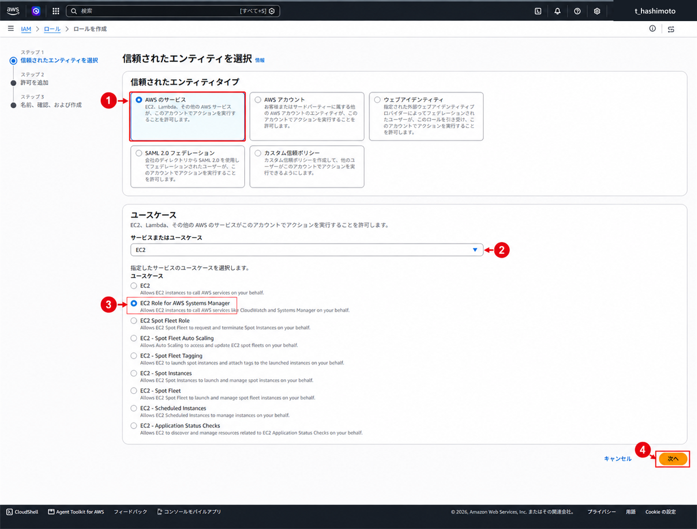
画像の見方
①「AWSのサービス」を選択します。② ユースケースでEC2を選択します。③ EC2 Role for AWS Systems Managerを選択します。④「次へ」を選択する
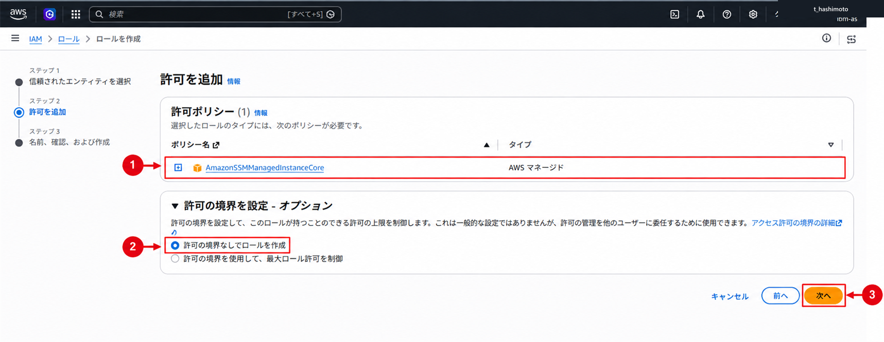
画像の見方
① AmazonSSMManagedInstanceCoreを確認します。② 本手順では許可の境界を設定しないため、「許可の境界なしでロールを作成」を選択します。③「次へ」を選択する

画像の見方
① ロール名を確認します。② 信頼ポリシーのサービスがec2.amazonaws.comであることを確認します。③ 許可ポリシーがAmazonSSMManagedInstanceCoreであることを確認します。④ 管理用タグを確認します。⑤「ロールを作成」を選択する
4.3 期待結果
- EC2を信頼するIAMロールが作成される
- EC2起動画面のIAMインスタンスプロフィールで作成したロールを選択できる
- 今回の検証では
Sample_EC2RoleへAmazonSSMManagedInstanceCoreが付与されている
4.4 お客様環境で確認された4ポリシー
| 正式名称 | 用途・扱い |
|---|---|
AmazonEC2RoleforSSM |
旧来のSSM用サービスロールポリシー。AWS公式では廃止予定とされ、AmazonSSMManagedInstanceCoreへの移行が案内されている |
AmazonSSMFullAccess |
Systems Manager全体への広い操作権限。お客様既存構成として記録する |
AmazonSSMManagedInstanceCore |
EC2をSystems Managerのマネージドノードとして動作させる基本権限 |
CloudWatchAgentAdminPolicy |
CloudWatch Agentの管理、メトリクス／ログ送信、関連Parameter Store操作に使用 |
本書の「お客様環境再現」手順では上記4ポリシーを記載する。ただし、新規の最小権限設計として4つすべてを必須と説明しない
情報：弊社標準と最小権限の違い
弊社標準として指定された正式名称は、AWS管理ポリシーAmazonSSMFullAccessである。一方、AWS公式のEC2インスタンスプロファイル手順はAmazonSSMManagedInstanceCoreを基本としている。AmazonSSMFullAccessはssm:*などの広い操作権限を持ち、SSM Agentの基本通信だけを目的とするEC2ロールには必須ではない。最小権限構成ではAmazonSSMManagedInstanceCoreを基本とし、S3、KMS、Directory Service、CloudWatch Logsなどの権限を利用機能と対象リソースに限定して追加する
情報：お客様環境のS3出力権限AmazonSSMFullAccessにはS3への書き込み権限は含まれない。一方、お客様環境で付与されている旧ポリシーAmazonEC2RoleforSSMには、全リソースを対象とするs3:PutObject、s3:GetObject、s3:GetBucketLocation等が含まれる。既存のpatchmanager/出力も確認できるため、お客様環境の再現手順ではS3権限を追加作成せず、既存ロールの付与状況と実際の書き込み成功を確認する
最小権限化する場合は、AmazonSSMManagedInstanceCoreを基本とし、arn:aws:s3:::skyarch-pid-2849-logs/patchmanager/*への必要な書き込み権限等へ限定したカスタムポリシーを用意する。切り替えテストが完了するまでAmazonEC2RoleforSSMを先に外さない
情報：S3出力だけに限定するポリシー例
次は同一アカウントの既存バケットへRun Command出力を書き込む用途に限定した例である。実際の暗号化方式、アクセス境界、SCPおよびバケットポリシーを確認してから適用する
{
"Version": "2012-10-17",
"Statement": [
{
"Sid": "WritePatchManagerCommandOutput",
"Effect": "Allow",
"Action": "s3:PutObject",
"Resource": "arn:aws:s3:::skyarch-pid-2849-logs/patchmanager/*"
},
{
"Sid": "ReadPatchLogBucketSettings",
"Effect": "Allow",
"Action": [
"s3:GetBucketLocation",
"s3:GetEncryptionConfiguration"
],
"Resource": "arn:aws:s3:::skyarch-pid-2849-logs"
}
]
}SSE-KMSを使用する場合は対象KMSキーの必要権限を追加する。別アカウントのバケットへ出力する場合は、バケット側許可と必要に応じてs3:PutObjectAclも検討する
5. 既存のログ保存用S3バケットを使用する
5.1 必要性
お客様環境では、既存バケットskyarch-pid-2849-logsのpatchmanager/プレフィックスへRun Commandの実行ログを保存する。したがって、新しいS3バケットは作成せず、既存バケットとプレフィックスを出力先として指定する
実行成功判定では、対象のMaintenance Window実行時刻、コマンドID、ノードIDおよびS3へ保存された出力オブジェクトを突き合わせる
注意：S3書き込み権限の確認
CloudTrail用の既存バケットポリシーが設定されていても、それだけではPatch Manager／Run Commandの書き込み権限を満たさない。S3出力を有効にする場合は、対象ノードへ割り当てたEC2インスタンスプロファイルが、指定プレフィックスへ出力を書き込めることを確認する
5.2 操作
- S3コンソールで既存バケット
skyarch-pid-2849-logsを開く patchmanager/プレフィックスが存在し、過去の実行ログが保存されていることを確認- 「パブリックアクセスをすべてブロック」、サーバー側暗号化、ライフサイクルルールおよび保存期間を確認
- 対象EC2のインスタンスプロファイルに
AmazonEC2RoleforSSMが付与されていることを確認する。お客様環境をそのまま再現する場合、追加のS3ポリシーは作成しない - Run Commandタスクの出力オプションで「S3への書き込みの有効化」を選択
- S3バケット名へ
skyarch-pid-2849-logs、キープレフィックスへpatchmanagerを入力 - テスト実行後、対象実行に対応する出力オブジェクトが作成されたことを確認
検証環境の入力値は、後述するRun Commandタスクのパラメータ画面で確認できる。画像内のバケット名は検証用のsample-mw-bucketであり、お客様環境では上記の既存バケットへ読み替える

5.3 期待結果
- パブリックアクセスがブロックされたログ用バケットが存在する
- EC2インスタンスロールが指定プレフィックスへ出力を書き込める
- 実行後、コマンドIDおよびノードIDに対応する標準出力／標準エラーが保存される
今回の検証環境での結果
2026年9月8日01:00 JSTのInstall実行について、sample-mw-bucket/patchmanager/へ出力が保存されたことを確認した。S3出力内のコマンドID9c048d9e-720c-47bc-ab41-b7d5fdc43045、ノードIDi-05914a8b6088a3a42、OperationType=Installおよび実行時刻をRun Command画面と突き合わせる。初回確認時にオブジェクトが見えなくても、Run Command本体の成否とは分け、更新後の一覧、指定バケット／プレフィックス、コマンドID配下を再確認する
6. SNS通知を設定する（任意）
SNSはMaintenance Windowsの必須要素ではない。今回の設定画面では「SNS通知の有効化」が未選択であるため、本手順の必須作業には含めない
実行失敗、タイムアウトまたは完了をメール等で通知する要件がある場合のみ、次を追加する
- StandardタイプのSNSトピックを作成する。FIFOトピックは使用しない
- メール等のサブスクリプションを作成し、受信者が購読確認を行う
- Systems ManagerがSNSへ通知するためのIAMロールを作成
- Maintenance Windowsのサービスロールへ、上記SNSロールに限定した
iam:PassRoleを付与 - Run CommandタスクでSNS通知、通知対象イベントおよびCommand／Invocation単位を設定
7. 検証用Windows EC2を作成する
7.1 今回の設定値
- インスタンス名：
Sample-mng-001 - AMI：
ami-0e951cd6c484ba795 - AMI名：
Windows_Server-2022-Japanese-Full-Base-2026.08.12 - インスタンスタイプ：
r6i.large - パブリックIPv4アドレス：無効
- IAMインスタンスプロフィール：
Sample_EC2Role - セキュリティグループ：SSM利用だけを目的とする場合、受信ポートは不要
7.2 Windows Server 2022日本語AMIを検索する
- EC2コンソールの「インスタンスを起動」で、「その他のAMIを閲覧する」を選択
- 右上のリージョンが「アジアパシフィック（東京）」であることを確認
- 「コミュニティAMI」を開き、検索欄へ
Windows_Server-2022-Japanese-Full-Baseを入力 - 「検証済みプロバイダー」で絞り込む
- 対象行で、AMI名、AMI ID、
OwnerAlias: amazon、プラットフォームwindows、アーキテクチャx86_64およびルートデバイスタイプebsを確認 - 既存環境を再現する場合は、設計書に記載された日付付きAMI名とAMI IDが一致する行を選択する。新規構築で最新AMIを採用する場合は、動作確認と変更承認を経てから選択
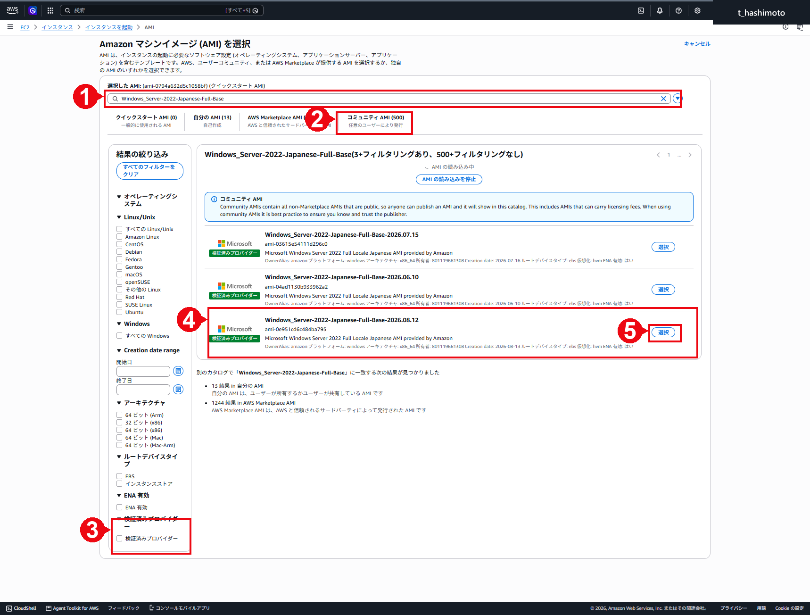
画像の見方
① 日本語版Windows Server 2022 Full BaseのAMI名で検索します。②「コミュニティAMI」を選択します。③「検証済みプロバイダー」で絞り込みます。④ 対象行のAMI名、AMI ID、説明、OwnerAlias: amazonおよび各属性を確認します。⑤ 確認した対象行の「選択」を押します。画面上部の「選択したAMI」は検索前の選択値であるため、④の行を選択するまでは対象AMIとして扱わない
情報：最新版をコマンドで確認する方法
最新のAmazon提供AMIを参照するだけなら、Systems Managerのパブリックパラメータを利用できる。次のコマンドは東京リージョンにおける最新のWindows Server 2022日本語Full Base AMI IDを返す。日付を固定した既存環境の再現には使用せず、返されたAMI名と検証済み所有者を別途確認する
aws ssm get-parameter --name "/aws/service/ami-windows-latest/Windows_Server-2022-Japanese-Full-Base" --region ap-northeast-1 --query "Parameter.Value" --output textAMI IDはリージョンごとに異なり、同じ製品でもリリースごとに更新される。したがって、手順書には検索文字列だけでなく、検証で使用したAMI名とAMI IDの両方を記録する
7.3 操作
- EC2コンソールで「インスタンスを起動」を選択
- 名前、AMI、インスタンスタイプ、キーペア、VPC、サブネットおよびセキュリティグループを指定
- 「高度な詳細」で作成したIAMインスタンスプロフィールを選択
- SSM、SSM Messages、EC2 Messages、必要なAWS管理S3バケットおよびWindows Update Catalog／WSUSへ到達できる通信経路を確認
- インスタンスを起動し、状態が「実行中」、ステータスチェックが2/2になるまで待つ
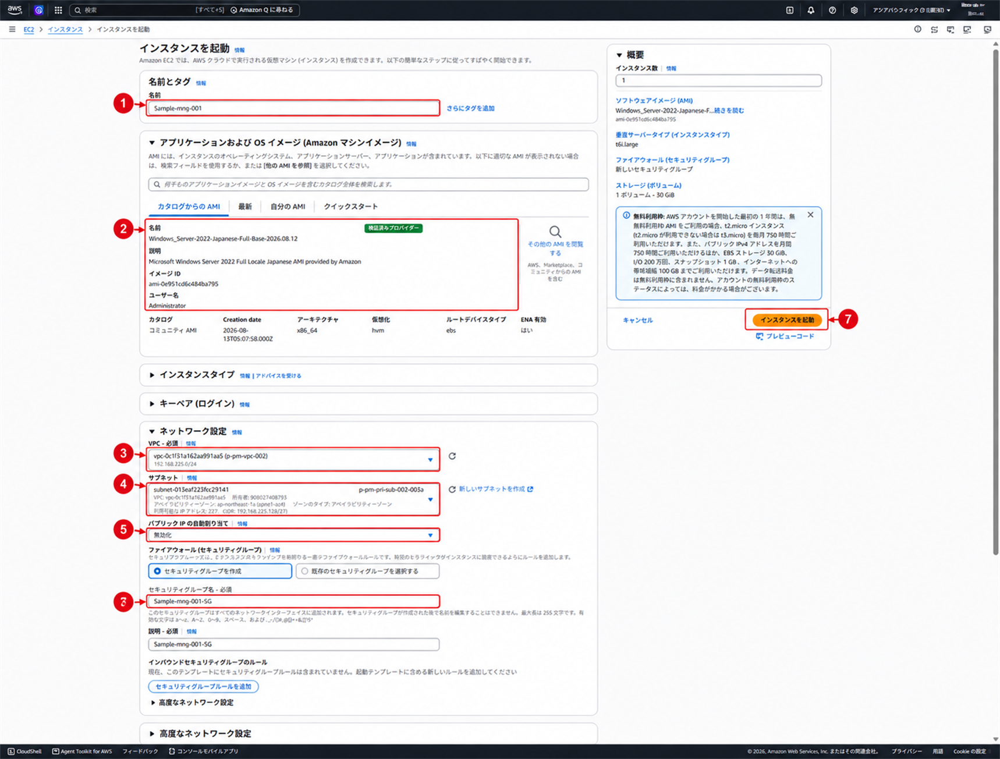
画像の見方
① インスタンス名を入力します。② Windows Server 2022のAMI名とAMI IDを確認します。③ VPCを選択します。④ サブネットを選択します。⑤ パブリックIP自動割り当てを「無効化」にします。⑥ セキュリティグループの作成方法と名前を確認します。⑦「インスタンスを起動」を選択する
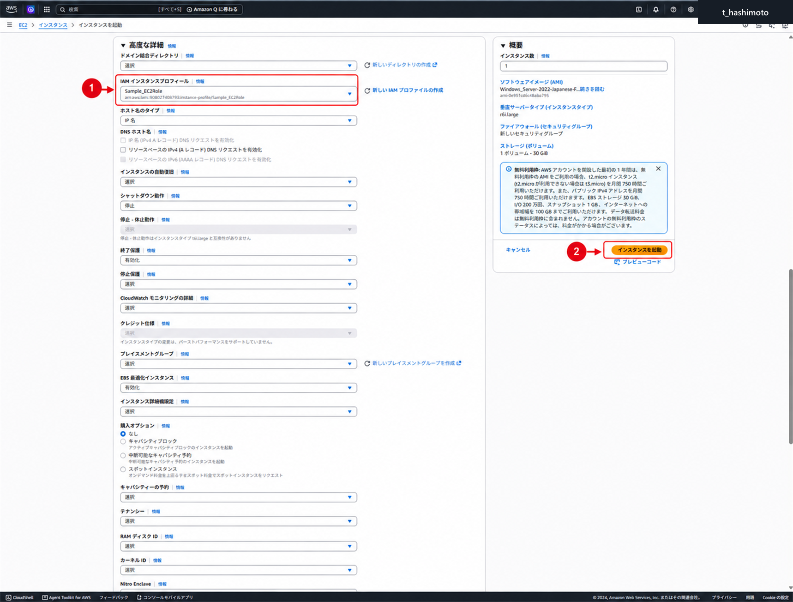
画像の見方
① IAMインスタンスプロフィールでSample_EC2Roleを選択します。②「インスタンスを起動」を選択する
7.4 注意事項
- AMI IDはリージョン固有であり、AMIが表示されない場合は別AMIへ無断で置き換えない
- RDPを使う場合はTCP/3389の接続元を承認済み管理元へ限定する
Patch Groupタグは、使用するパッチベースラインとPatch Group値を確定してから付与する
8. SSM Agentとマネージドノードを確認する
Amazon提供のWindows Server AMIには通常SSM Agentがプレインストールされているため、先にサービス状態とバージョンを確認し、未導入の場合だけインストールする
8.1 Windows上で確認する
管理者権限のPowerShellで次を実行する
Get-Service AmazonSSMAgent
Get-CimInstance Win32_Service -Filter "Name='AmazonSSMAgent'" |
Select-Object Name, State, StartMode, PathName
& 'C:\Program Files\Amazon\SSM\amazon-ssm-agent.exe' -version期待結果はサービス状態Running、開始モードAuto、バージョン表示ありである
未導入でSystems Managerから接続できない場合は、次のいずれかの経路でWindowsへ管理者接続してインストールする
- 承認済み接続元からのRDP
- EC2 Serial Console（Windows側の事前設定と権限がある場合）
- Systems Manager以外の踏み台／運用接続経路
- AMI作成工程またはUser Dataによる事前導入
SSM Agentがない状態ではFleet Manager、Session Manager、Run Commandからインストールできない
情報：SSM Agentが未導入の場合の手動インストール手順
Amazon提供のWindows Server 2022 AMIには、通常SSM Agentがプレインストールされている。Get-Service AmazonSSMAgentでサービスが見つからない場合だけ、次の手順を実施する。SSM Agentが未導入または停止している状態では、Session Manager、Fleet ManagerおよびRun Commandをインストール経路として使用できないため、RDP、踏み台、EC2 Serial Console、User Dataなど、Systems Manager以外の承認済み管理経路を使用する
- Windows Serverへ管理者権限で接続
- Windows PowerShell 3.0以降が利用できることを確認
- 管理者権限のPowerShellで、東京リージョンの64-bit版インストーラーをダウンロードしてサイレントインストール
[System.Net.ServicePointManager]::SecurityProtocol = 'TLS12'
$installerPath = Join-Path $env:TEMP 'AmazonSSMAgentSetup.exe'
Invoke-WebRequest `
-Uri 'https://amazon-ssm-ap-northeast-1.s3.ap-northeast-1.amazonaws.com/latest/windows_amd64/AmazonSSMAgentSetup.exe' `
-OutFile $installerPath
Start-Process -FilePath $installerPath -ArgumentList '/S' -Wait
Restart-Service AmazonSSMAgent
Remove-Item -LiteralPath $installerPath -Force- サービス状態、開始方式およびバージョンを確認
Get-Service AmazonSSMAgent
Get-CimInstance Win32_Service -Filter "Name='AmazonSSMAgent'" |
Select-Object Name, State, StartMode, PathName
& 'C:\Program Files\Amazon\SSM\amazon-ssm-agent.exe' -version- EC2へSystems Manager用IAMロールが割り当てられ、HTTPS（TCP/443）で必要なSystems Managerエンドポイントへ到達できることを確認
- 数分後にFleet Managerで対象ノードが
Onlineとなることを確認
Runningにならない場合は、C:\ProgramData\Amazon\SSM\Logs\amazon-ssm-agent.log、IAMインスタンスプロフィール、DNS、プロキシおよびTCP/443の通信経路を確認する
出典：Manually installing and uninstalling SSM Agent on EC2 instances for Windows Server
8.2 Fleet Managerで確認する
- Systems Managerの「フリートマネージャー」を開く
- 対象EC2のノード状態が「実行中」、Ping statusが「オンライン」であることを確認
- OS、AMI、SSM Agentバージョン、IAMロールを記録
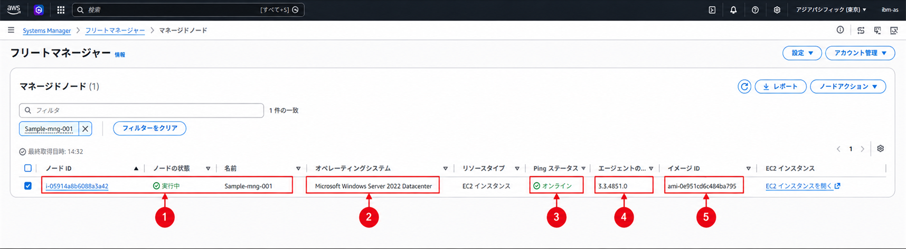
画像の見方
① 対象ノードのノードID、状態および名前を確認します。② OSがWindows Server 2022であることを確認します。③ Pingステータスが「オンライン」であることを確認します。④ SSM Agentバージョンを確認します。⑤ AMI IDを確認する
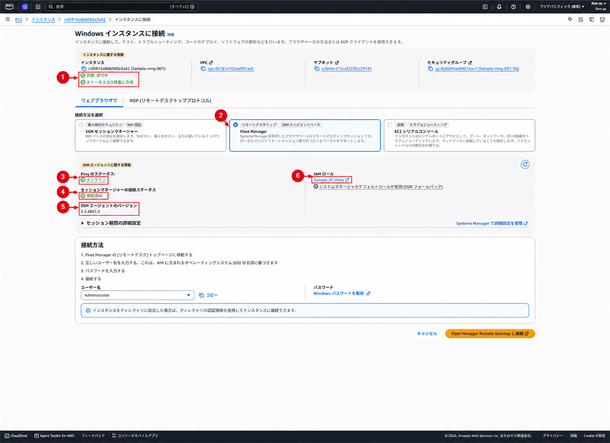
画像の見方
① インスタンスが「実行中」で、ステータスチェックに合格していることを確認します。② 接続方法でFleet Managerを選択します。③ Pingステータスが「オンライン」であることを確認します。④ Session Managerが「接続済み」であることを確認します。⑤ SSM Agentバージョンを確認します。⑥ IAMロールがSample_EC2Roleであることを確認する
今回の検証では、Sample-mng-001がOnlineで、SSM Agentバージョン3.3.4851.0を確認した
9. Windows用パッチベースラインを決定する
- Systems Manager－「パッチマネージャー」－「パッチベースライン」を開く
- Windows Server用のAWS定義済みパッチベースラインについて、製品、分類、重要度、承認ルールが要件を満たすか確認
- AWS定義済みベースラインで要件を満たす場合は、そのベースラインを使用
- 承認日数、分類、重要度、拒否パッチなどを変更する必要がある場合だけ、Windows Server用カスタムパッチベースラインを作成
- 使用するベースラインID、ベースライン名、承認ルールおよび変更承認を記録
構築時確認
今回はAWS定義済みパッチベースラインの一覧まで確認したが、使用するWindowsベースラインとsample-windowの関連付け証跡は取得していない
情報：Windows用カスタムパッチベースラインを作成する場合
今回確認したAWS-DefaultPatchBaselineで要件を満たす場合、カスタムパッチベースラインの作成は不要である。承認待機日数、対象分類、重要度、Microsoft製アプリケーション、個別の承認／拒否KBなどを変更する場合だけ、次の手順で作成する
Systems Managerコンソールで「パッチマネージャー」－「パッチベースライン」を開く
「パッチベースラインを作成する」を選択
名前と説明を入力し、オペレーティングシステムに
Windowsを選択「利用可能なセキュリティ更新プログラムのコンプライアンスステータス」を選択する。承認待機中のセキュリティ更新も非準拠として可視化する場合は
Non-Compliantを選択「オペレーティングシステムの承認ルール」で、製品、分類、重要度および自動承認条件を設定する
- デフォルトベースライン相当の例：製品
All、分類CriticalUpdatesおよびSecurityUpdates、重要度CriticalおよびImportant、リリースまたは更新から7日後に自動承認 - Windows Server 2022だけへ限定する場合：製品で対応する
WindowsServer2022を選択 - 即時承認を避ける場合：自動承認日数を
0にせず、変更管理で定めた検証期間を設定
- デフォルトベースライン相当の例：製品
Microsoft製アプリケーションも対象にする要件がある場合だけ、「アプリケーションの承認ルール」を追加
個別に承認または拒否するKBがある場合だけ、「パッチの例外」へKB番号を入力し、拒否パッチのアクションを選択する。拒否リストは自動承認ルールおよび承認リストより優先される
必要に応じて管理用タグを付与し、「パッチベースラインを作成する」を選択
作成されたベースラインID、名前、Windows用承認ルールおよび例外設定を記録
作成しただけでは対象EC2に適用されないため、手順10に従い、Patch Group値
sample-windowを作成したベースラインへ関連付けるScanテストで出力された
BaselineIdが作成したベースラインIDと一致することを確認してからInstallへ進む
「Windowsのデフォルトとして設定」は、Patch Groupを指定しないWindowsノードを含めて影響範囲が広がるため、組織全体の設計・変更承認がある場合だけ使用する
出典：Creating a custom patch baseline for Windows Server／出典：Viewing AWS predefined patch baselines／出典：Predefined and custom patch baselines
10. Patch Groupをパッチベースラインへ関連付ける
今回のPatch Group値はsample-windowである
Patch Groupタグには次の2つの役割がある
- Maintenance Windowが実行対象EC2を選ぶためのタグ条件
- Patch Managerが、そのEC2へどのパッチベースラインを適用するか選ぶための関連付けキー
Maintenance Windowのターゲット登録だけでは、2つ目の「どのベースラインを使うか」は設定されない。そのため、Patch Group=sample-windowを使う構成では、sample-windowを使用するWindowsパッチベースラインへ登録する
- 使用するWindowsパッチベースラインの詳細を開く
- Patch Groupの変更／登録操作を選択
- Patch Group値へ
sample-windowを入力して登録 - ベースラインIDとPatch Group値の組み合わせを確認
コンソールでPatch Groupを登録できないアカウント／リージョンでは、AWS CLIのregister-patch-baseline-for-patch-groupを使用するか、Quick SetupのPatch Policyを検討する
aws ssm register-patch-baseline-for-patch-group `
--region ap-northeast-1 `
--baseline-id <WINDOWS_PATCH_BASELINE_ID_OR_ARN> `
--patch-group sample-window停止条件Patch Group=sample-windowを使用する場合、適用するベースラインとの関連付けを確認できるまでScan／Installへ進まない
別案：デフォルトベースラインだけを使う場合
Patch Groupによるベースライン切り替えが不要で、単にMaintenance Windowの対象を選びたいだけなら、予約されたPatch Groupキーではなく、MaintenanceWindow=sample-windowなどの通常タグをターゲット条件に使用する。この場合はPatch Groupとベースラインの関連付け手順を省略できる
11. Maintenance Windowを作成する
- Systems Manager－「メンテナンスウィンドウ」を開く
- 「メンテナンスウィンドウの作成」を選択
- 名前、スケジュール、Duration、Cutoffおよびタイムゾーンを入力
- 未登録ターゲットの許可は、登録済みターゲットだけを使用する場合は無効に
- 作成後、状態が「有効」で、次の実行時刻が想定どおりであることを確認
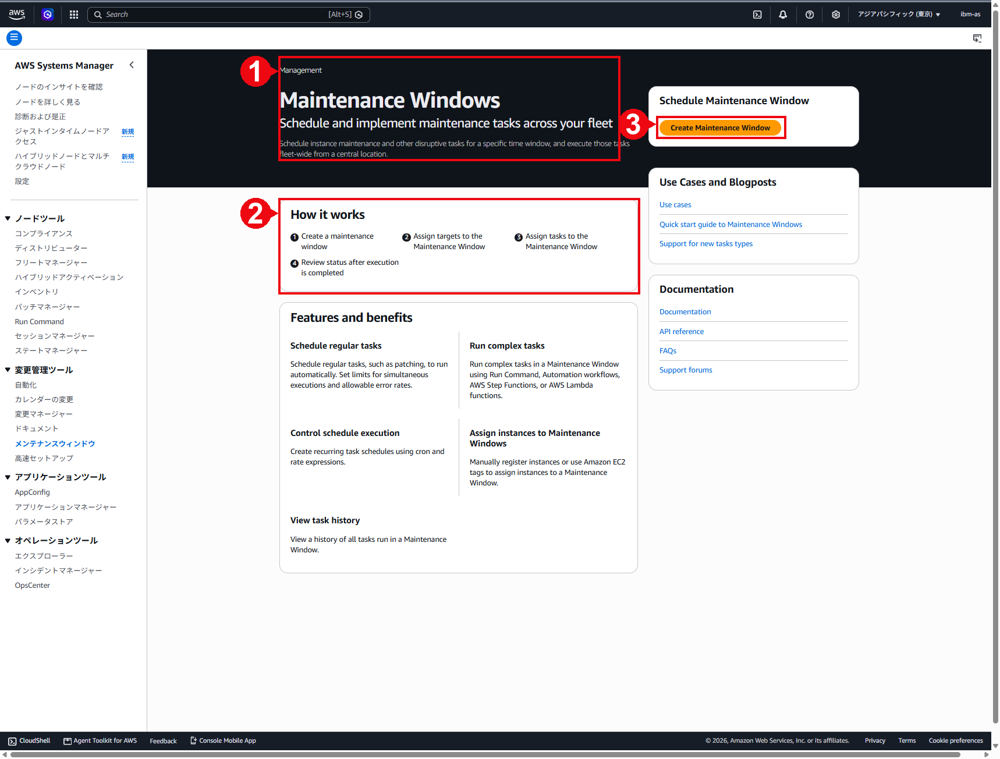
画像の見方
① Maintenance Windowsが、指定時間帯に管理対象ノードへ保守タスクを実行する機能であることを確認します。② AWSコンソールに表示される基本順序は「ウィンドウ作成→ターゲット割り当て→タスク割り当て→実行後のステータス確認」です。③「Create Maintenance Window」を選択して作成を開始します。画面が英語表示の場合も、後続の日本語画面と操作内容は同じ
今回の検証値は次のとおりである
| 項目 | 値 |
|---|---|
| 名前 | Sample-MW-WindowsUpdate |
| スケジュール | cron(0 17 ? * THU#4 *) |
| タイムゾーン | UTC |
| Duration | 1時間 |
| Cutoff | 0時間 |
| 未登録ターゲット | 許可しない |
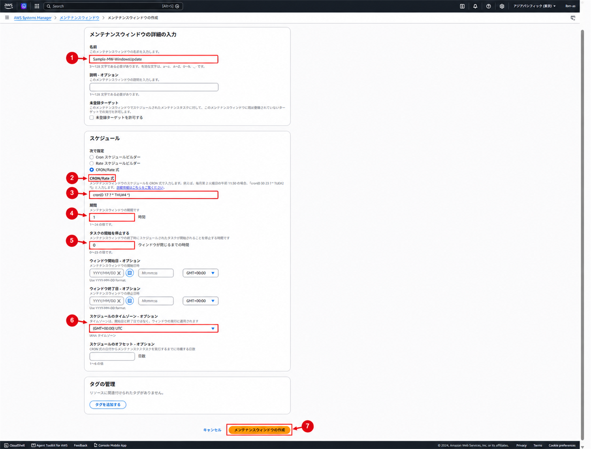
画像の見方
① メンテナンスウィンドウ名を入力します。② CRON/Rate式を選択します。③ CRON式を入力します。④ 期間を入力します。⑤ カットオフを入力します。⑥ スケジュールのタイムゾーンをUTCに設定します。⑦「メンテナンスウィンドウの作成」を選択する
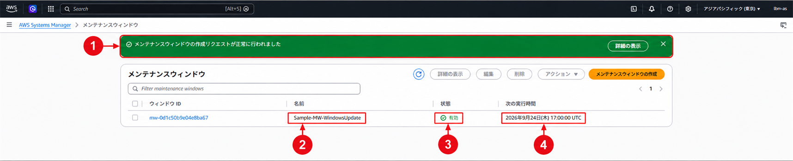
画像の見方
① 作成成功メッセージを確認します。② 作成したメンテナンスウィンドウ名を確認します。③ 状態が「有効」であることを確認します。④ 次の実行時間を確認する
注意：UTCとJST
上記cronは毎月第4木曜17:00 UTC、すなわち日本時間では翌金曜02:00 JSTに実行される。お客様要件が「第4木曜17:00 JST」の場合はこの設定ではないため、タイムゾーンまたはcronを修正する
12. Maintenance Windowのターゲットを登録する
- 作成したMaintenance Windowを開き、「ターゲット」タブを選択
- 「ターゲットの登録」を選択
- ターゲット名へ
PatchingTargetを入力 - 「インスタンスタグを指定」を選択
- キーへ
Patch Group、値へsample-windowを入力し、「Add」を選択 - 「Register target」を選択
- ターゲット一覧に
PatchingTargetが表示されることを確認
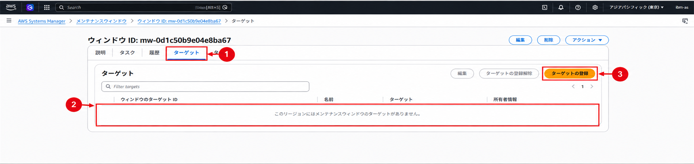
画像の見方
①「ターゲット」タブを選択します。② ターゲットが未登録であることを確認します。③「ターゲットの登録」を選択する
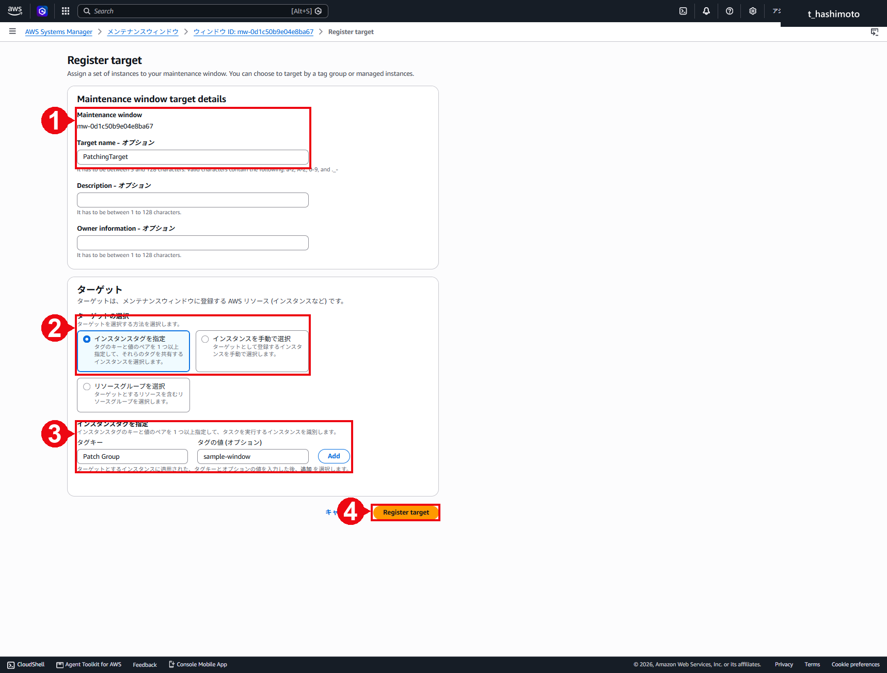
画像の見方
① ターゲット名へPatchingTargetを入力します。②「インスタンスタグを指定」を選択します。③ キーへPatch Group、値へsample-windowを入力して「Add」を選択します。④ 条件が追加されたことを確認してから「Register target」を選択する

画像の見方
① ターゲット名へPatchingTargetを入力します。②「インスタンスタグを指定」を選択します。③「Add」後、タグ条件がPatch Group : sample-windowとして追加済みであることを確認します。④「Register target」を選択する

画像の見方
① 登録成功メッセージを確認します。② ターゲット一覧にPatchingTargetが表示されていることを確認します。③ ターゲット数が1であることを確認する
13. EC2へPatch Groupタグを付与する
- EC2コンソールでパイロットインスタンス
Sample-mng-001を選択 - 「タグを管理」を開く
- キー
Patch Group、値sample-windowを追加 - 「保存」を選択
- EC2詳細画面でタグが保存済みであることを確認
- Maintenance Windowのターゲット条件に一致するEC2がパイロット1台だけであることを確認
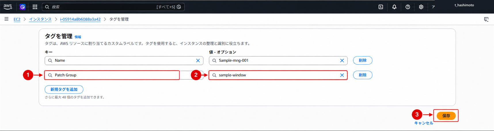
画像の見方
① タグキーへPatch Groupを入力します。② タグ値へsample-windowを入力します。③「保存」を選択する
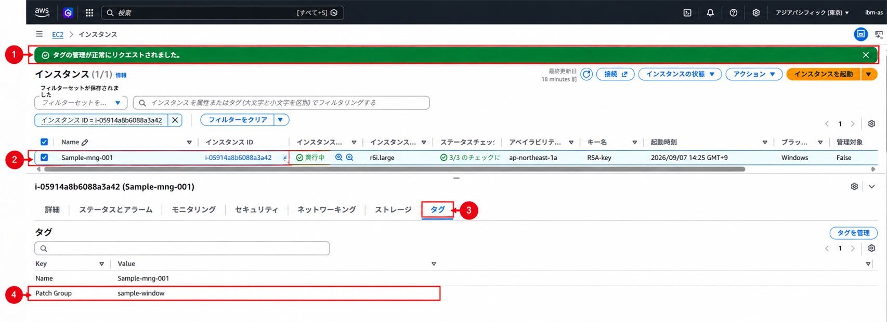
画像の見方
① タグ保存成功メッセージを確認します。② 対象インスタンスの名前とIDを確認します。③「タグ」タブを選択します。④ Patch Group=sample-windowが保存されていることを確認する
保存完了メッセージと、EC2タグ一覧のPatch Group=sample-windowを確認した
14. Run Commandタスクを登録する
- Maintenance Windowの「タスク」タブで「タスクの登録」－「Run Commandタスクの登録」を選択
- タスク名を入力
- コマンドドキュメント
AWS-RunPatchBaselineを選択 - ドキュメントのバージョンは「ランタイムのデフォルトバージョン」を選択
- 登録済みターゲット
PatchingTargetを選択 - パイロット1台ではConcurrencyを1、Error thresholdを1以下に設定
- S3出力を有効化し、お客様環境ではバケット名
skyarch-pid-2849-logs、プレフィックスpatchmanagerを入力する。検証環境ではsample-mw-bucket/patchmanagerへ読み替える - SNS通知は通知要件がある場合だけ有効化
- 初回テストでは
Operation=Scan、RebootOption=NoRebootを設定 - タイムアウト値を確認して登録
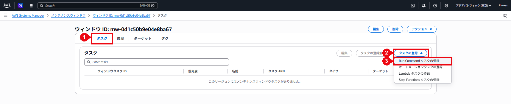
画像の見方
① 作成したMaintenance Windowの「タスク」タブを選択します。②「タスクの登録」を開きます。③「Run Commandタスクの登録」を選択します。パッチ適用では、この後AWS-RunPatchBaselineを指定する
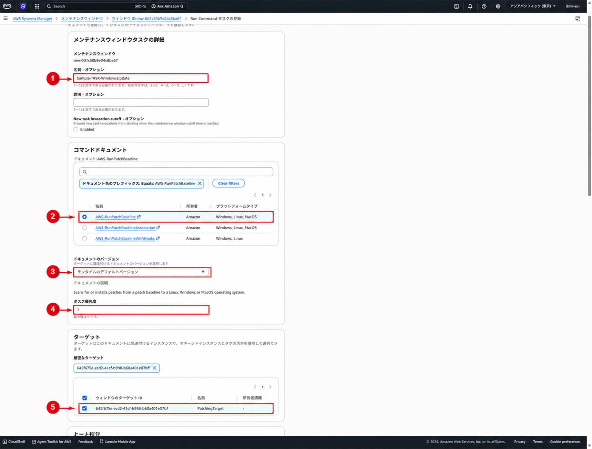
画像の見方
① タスク名を入力します。② コマンドドキュメントでAWS-RunPatchBaselineを選択します。③ ドキュメントのバージョンを確認します。④ タスク優先度を確認します。⑤ 登録済みターゲットPatchingTargetを選択する
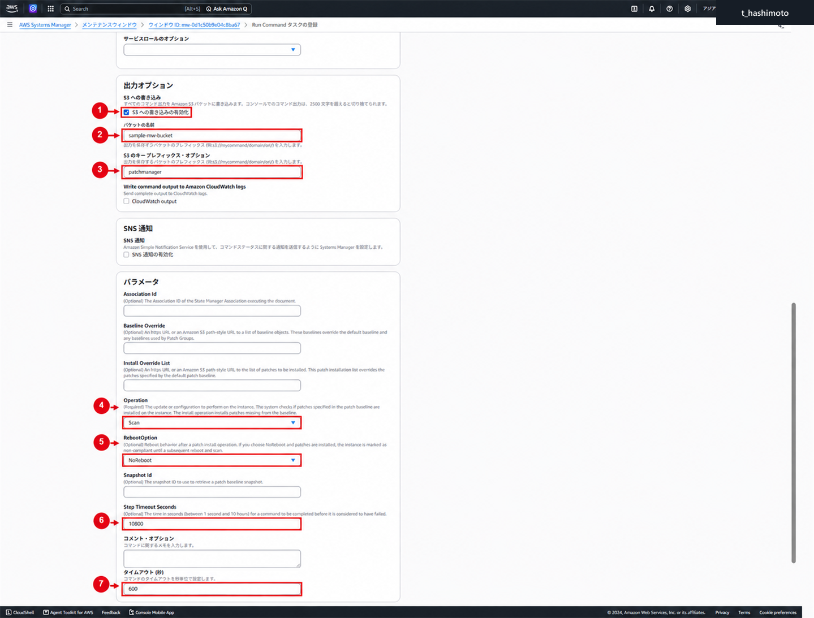
画像の見方
①「S3への書き込みの有効化」を選択します。② 検証用S3バケット名を入力します。③ キープレフィックスを入力します。④ OperationでScanを選択します。⑤ RebootOptionでNoRebootを選択します。⑥ Step Timeout Secondsが10800であることを確認します。⑦ コマンドのタイムアウトが600秒であることを確認する
画像の見方
① タスク登録成功メッセージを確認します。②「タスク」タブを確認します。③ タスク名を確認します。④ タスクARN欄がAWS-RunPatchBaselineであることを確認します。⑤ タイプがRUN_COMMAND、ターゲット数が1であることを確認する
画像の扱い
掲載画像は、初回テストの手順値Operation=Scan、RebootOption=NoRebootおよび操作順が分かるように①～⑦の注釈を追加した説明用画像である。AWSコンソール上の変更完了または実行成功を示す証跡ではないため、実環境で同じ値を設定した後、登録内容と実行結果を別途取得する
情報：ScanとRebootOptionOperation=Scanは更新プログラムをインストールせず、EC2を再起動しない。初回テストでは、画面上でも無変更テストであることを明確にし、後からOperationだけを誤ってInstallへ変更した場合のOS再起動リスクも抑えるため、NoRebootを選択する
15. 実行前チェック
次のすべてを満たすまでMaintenance Windowを実行しない
- EC2が実行中で、ステータスチェックが2/2である
- Fleet ManagerのPing statusがOnlineである
-
AmazonSSMAgentがRunningである - EC2 IAMロールに必要なSSM権限がある
- EC2 IAMロールで
skyarch-pid-2849-logs/patchmanager/へ書き込める -
Patch Group=sample-windowがEC2へ保存されている -
sample-windowと使用するWindowsパッチベースラインの関連付けを確認済みである - ターゲットに一致するEC2がパイロット1台だけである
- 初回テストが
Operation=Scanである - 初回テストの
RebootOptionがNoRebootである - 本番Installの場合、バックアップ、再起動、業務停止および確認担当の承認がある
16. Scanテストと成功判定
- パイロット1台へ
AWS-RunPatchBaselineをOperation=Scanで実行 - Maintenance Window、タスク、Run Commandおよびノード別結果を確認
- S3へ標準出力／標準エラーが保存されたことを確認
- Patch ManagerのComplianceを開き、最新スキャン結果を確認
次をすべて満たせばScan実行成功とする
- Run Command全体と対象ノードが
Success - Windowsの
PatchWindowsステップがSuccess、応答コード0 - Failed、Timed out、Delivery timed outが0
- S3出力が実行IDおよび対象ノードと一致
- Complianceに対象ノード、ベースライン、最新スキャン時刻が反映
Scan後にMISSINGまたはNonCompliantが表示されても、未適用パッチを正常に検出した結果であればScanコマンド失敗ではない
今回の検証結果
Scanを意図した2026年9月8日00:00 JSTの実行は、Run Command出力上ではOperationType=Install、RebootOption=NoRebootであった。そのため、Maintenance WindowとRun Commandの成功は確認できたが、Scan単独テストの証跡としては扱わない
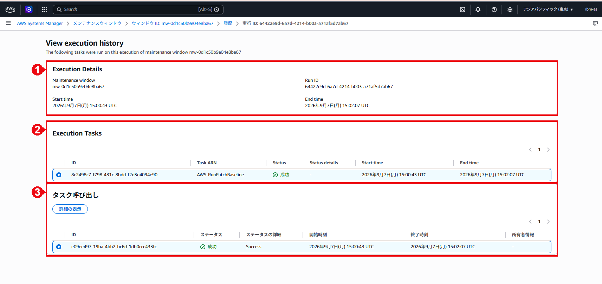
画像の見方
① Maintenance Window ID、実行ID、開始時刻および終了時刻を確認します。② AWS-RunPatchBaselineタスクのステータスが「成功」であることを確認します。③ 対象ノードのタスク呼び出しが「成功／Success」であることを確認します。実際のScan／Install種別は、この画面だけで判断せずRun Command出力のOperationTypeを確認する
17. Installテストと成功判定
Scan結果と変更承認を確認した後、同じパイロット1台へOperation=Installを実行する。RebootIfNeededを使用する場合は、業務停止時間と再起動後確認を事前に調整する
次をすべて満たせばInstall実行成功とする
- Maintenance Window、タスク、Run Commandおよび対象ノードが
Success - Windowsの
PatchWindowsステップがSuccess、応答コード0 - S3へ実行ログが保存されている
- 再起動後、EC2ステータスチェックが2/2で、Fleet ManagerがOnlineへ復帰
- Windowsサービス、イベントログ、アプリケーションおよび業務疎通に異常なし
- 再Scan後、意図したベースライン内で
MISSING=0、FAILED=0、INSTALLED_PENDING_REBOOT=0
17.1 Install前にWindowsとAWSの状態を記録する
- Windowsへ管理者権限で接続
winverを開き、Windows ServerのバージョンとOSビルドを記録- 「設定」－「更新とセキュリティ」－「Windows Update」を開き、利用可能な更新、再起動待ちおよび管理ポリシーの表示を記録
- 「更新の履歴を表示する」を開き、既存履歴を記録する。事前確認では「更新プログラムのチェック」を押さない
- Systems ManagerのComplianceとFleet Managerのパッチ画面を開き、対象ノード、ベースライン、最終更新日時、必要な更新、エラーおよび適用済みKBを記録
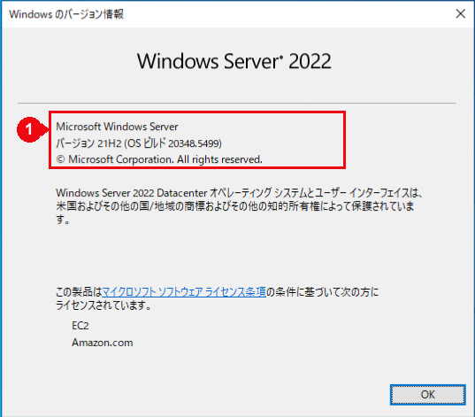
画像の見方
① Windows ServerのバージョンとOSビルドを記録します。今回のInstall前はWindows Server 2022 Version 21H2、OSビルド20348.5499だった
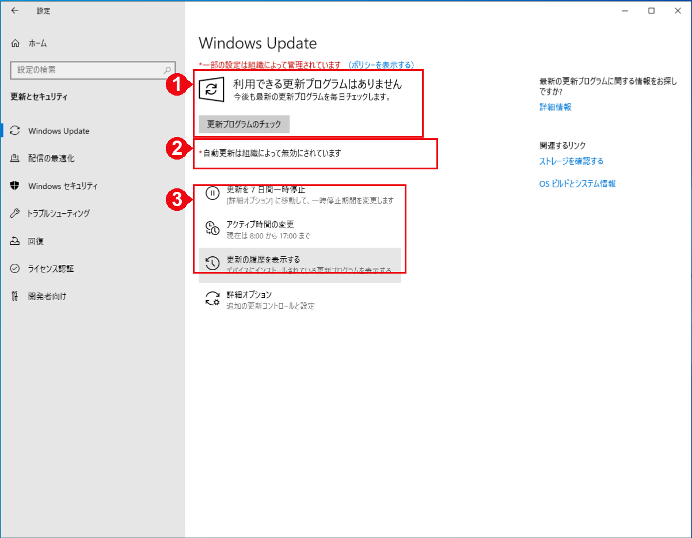
画像の見方
① 画面表示上「利用できる更新プログラムはありません」であることを確認します。② 自動更新が組織のポリシーで無効であることを確認します。③ 更新の一時停止、アクティブ時間および更新履歴への導線を確認します。この画面の表示だけではPatch Managerの準拠を判定しない
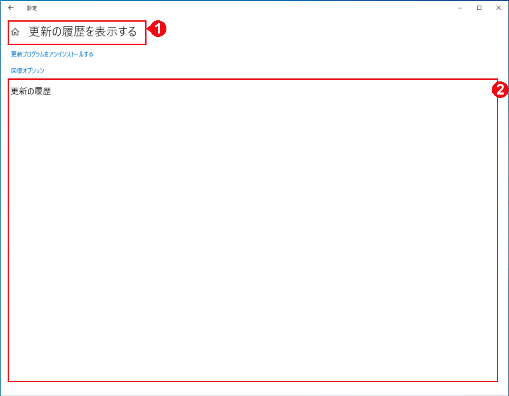
画像の見方
① 「更新の履歴を表示する」画面であることを確認します。② Install前の更新履歴を記録します。今回の画面では履歴が表示されていませんだった
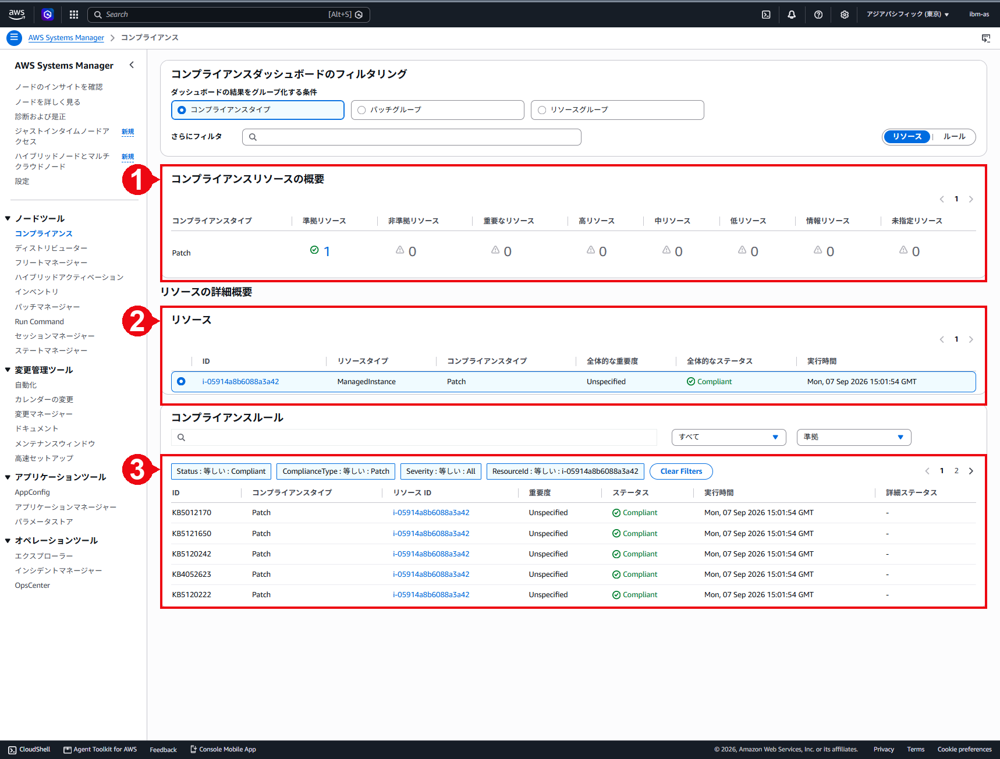
画像の見方
① Patchの準拠リソースが1、非準拠が0であることを確認します。② 対象ノードの全体ステータスがCompliantであることと実行時間を確認します。③ ベースラインに対する各KBのコンプライアンス状態を確認する
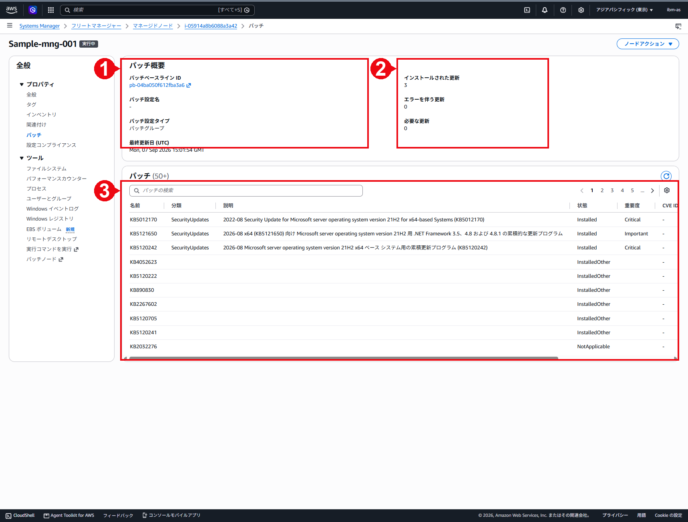
画像の見方
① 適用されたパッチベースラインID、設定タイプおよび最終更新日時を確認します。② インストール済み3件、エラー0件、必要な更新0件であることを確認します。③ KB番号、分類、状態および重要度を記録する
17.2 Installと再起動設定を確認する
Installを実行する場合は、Maintenance WindowのRun Commandタスクを編集し、Operation=Installを選択する。RebootIfNeededを選択すると、パッチが適用されて再起動が必要と判定された場合にOSが再起動する。対象更新が0件の場合は、RebootIfNeededでも再起動しない
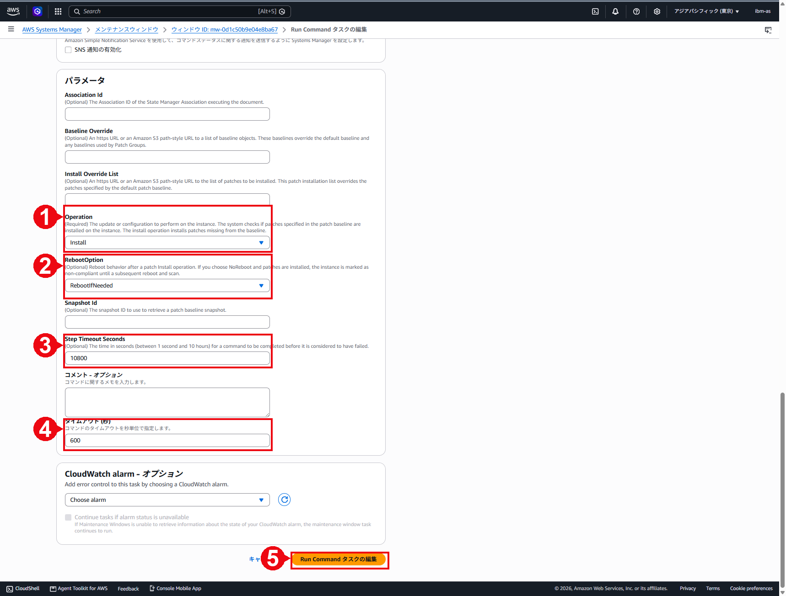
画像の見方
① OperationでInstallを選択します。② RebootOptionでRebootIfNeededを選択します。③ Step Timeout Secondsが10800であることを確認します。④ コマンドのタイムアウトが600秒であることを確認します。⑤ 設定内容を確認してRun Commandタスクを更新する
17.3 AWSコンソールでInstallの成功を確認する
- Maintenance Windowの「履歴」を開く
- Install実行のステータスが「成功」であることを確認し、開始時刻と終了時刻を記録
- 実行IDを選択し、Execution Tasksとタスク呼び出しが「成功／Success」であることを確認
- Run CommandのコマンドIDを開き、全体、詳細および対象ノードのステータスが「成功」で、エラー数と配信タイムアウト数が0であることを確認
- コマンドドキュメントが
AWS-RunPatchBaseline、実行パラメータがInstall/RebootIfNeededであることを確認 - 「出力の表示」で
OperationType、RebootOption、InstalledCount、MissingCount、FailedCount、InstalledPendingRebootCountおよび新規インストールKB一覧を記録
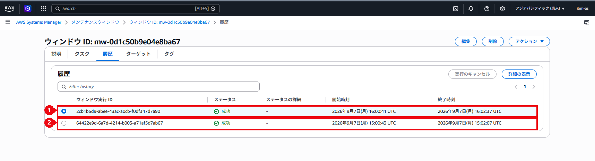
画像の見方
① 01:00 JSTに開始したInstall実行が「成功」で完了したことを確認します。② 00:00 JSTの初回実行も「成功」であることを確認します。コンソール表示時刻はUTCであるため、日本時間へ9時間加算する
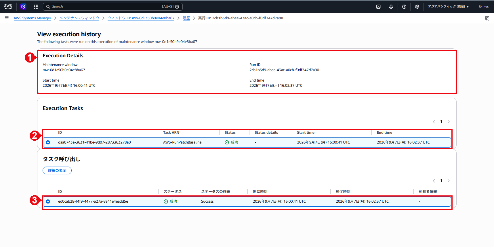
画像の見方
① Maintenance Window ID、実行ID、開始時刻および終了時刻を確認します。② AWS-RunPatchBaselineタスクが「成功」であることを確認します。③ 対象ノードのタスク呼び出しが「成功／Success」であることを確認する
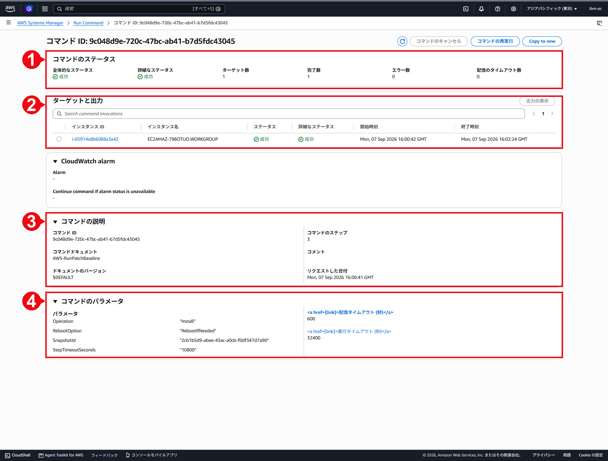
画像の見方
① 全体と詳細のステータスが「成功」、完了数1、エラー数0、配信タイムアウト数0であることを確認します。② 対象ノードのステータスと開始・終了時刻を確認します。③ コマンドドキュメントがAWS-RunPatchBaselineであることを確認します。④ Operation=Install、RebootOption=RebootIfNeeded、StepTimeoutSeconds=10800であることを確認する
17.4 今回のInstall実行結果
2026年9月8日01:00 JSTの検証結果は次のとおりである
| 項目 | 確認値 | 判定 |
|---|---|---|
| コマンドID | 9c048d9e-720c-47bc-ab41-b7d5fdc43045 |
記録済み |
| Operation／RebootOption | Install／RebootIfNeeded |
設定どおり |
| 全体／対象ノード | Success／Success |
成功 |
| 応答コード | 【証跡未取得】 |
今回取得した画像には表示されていない。次回は対象ノードの出力詳細で取得する |
| 使用ベースライン | AWS-DefaultPatchBaseline、pb-04ba050f612fba3a6 |
確認済み |
| Patch Group | sample-window |
確認済み |
| InstalledCount | 3 |
ベースラインに対する既存のインストール済み件数。今回3件を新規適用した意味ではない |
| MissingCount／FailedCount | 0／0 |
ベースライン対象の不足・失敗なし |
| InstalledPendingRebootCount | 0 |
再起動待ちなし |
| 新規インストールKB一覧 | なし | 今回新規に適用されたパッチなし |
| 再起動 | 発生なし | 対象更新がなかったため |
| S3出力 | 保存確認済み | sample-mw-bucket/patchmanager/に保存された出力で、コマンドID、ノードID、実行種別、集計値および実行時刻をRun Command画面と照合済み |
Successは、指定したベースラインに基づく処理がエラーなく完了したことを示す。今回のように新規適用対象が0件の場合もSuccessとなる。実際に更新されたKBを確認する場合は、Run Command出力末尾のKbArticleId / Installed / Message一覧、Windowsの更新履歴およびOSビルドを実行前後で比較する
今回のS3出力では、InstalledCount=3、InstalledOtherCount=6である一方、実行末尾のKbArticleId / Installed / Message一覧は空であった。このため、3件と6件はスキャン時点で既にインストール済みと分類された件数であり、今回新規に9件を適用した意味ではない。rebootCount=0、InstalledPendingRebootCount=0であることから、今回の実行で再起動は発生しておらず、再起動待ちもない
17.5 S3でInstall実行ログを確認する
- S3コンソールで、Run Commandタスクに指定したバケットを開く
- キープレフィックス
patchmanager/を開く - 対象コマンドID、対象ノードID、プラグイン名
awsrunPowerShellScript、ステップ名PatchWindowsの順に開く stdoutを開き、Run Command画面とコマンドID、ノードID、実行時刻、OperationType、RebootOptionおよび集計値が一致することを確認stderrが作成されている場合は内容を確認し、エラーの有無を判定
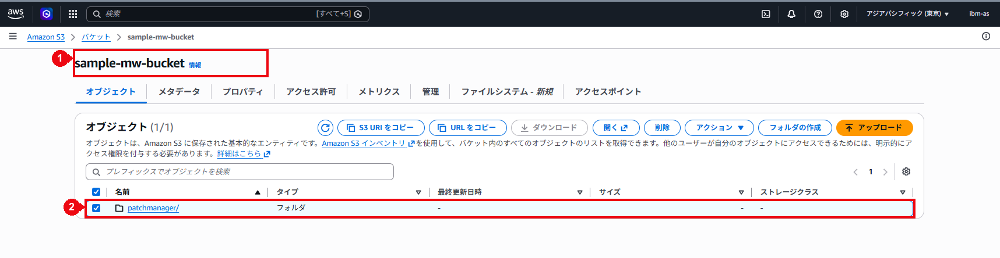
画像の見方
① Run Commandタスクで指定したバケットsample-mw-bucketを確認します。② 出力先として指定したpatchmanager/プレフィックスを開く
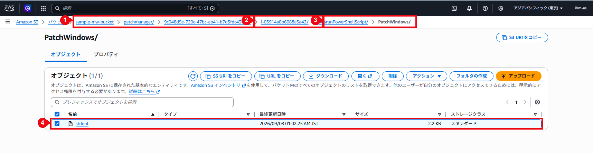
画像の見方
① 対象コマンドIDのフォルダであることを確認します。② 対象ノードIDを確認します。③ awsrunPowerShellScript/PatchWindows配下であることを確認します。④ stdoutの更新日時とサイズを確認し、オブジェクトを開いて実行内容を確認する
17.6 Windows Server内でInstall後の状態を確認する
- 再起動が発生した場合は、RDPまたは承認済み運用経路で再接続できることを確認
winverを開き、Install前に記録したWindowsバージョンとOSビルドから変化したか比較- 「コントロールパネル」－「プログラム」－「プログラムと機能」－「インストールされた更新プログラムを表示」を開く
- KB番号とインストール日をInstall前後で比較する。今回の実行時刻より前の日付のKBは、今回SSMが新規適用した更新として扱わない
- 必要に応じてWindowsイベントログ、サービス状態および業務アプリケーションの疎通を確認
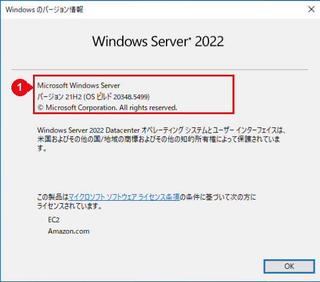
画像の見方
① Install後のWindowsバージョンとOSビルドを確認します。今回の結果はInstall前と同じVersion 21H2、OSビルド20348.5499であり、OSビルドの変化はありませんだった
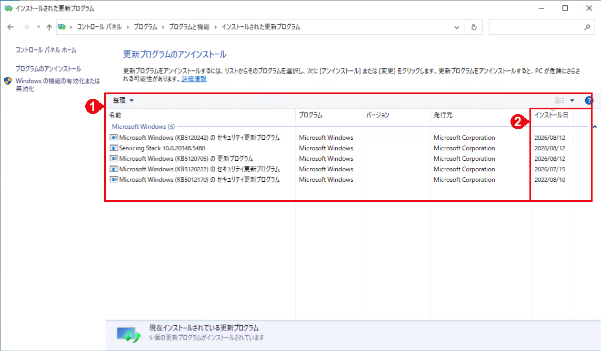
画像の見方
① Install後にWindowsへ登録されているKB番号を確認します。② 各KBのインストール日を確認します。今回表示された日付はいずれもSSM実行日の2026年9月8日より前であるため、今回新規に適用されたKBではない
18. Systems Managerの成功とWindows Update表示の違い
Systems ManagerのSuccessと、Windows Update画面に「利用可能な更新プログラムはありません」と表示されることは同じ意味ではない。また、Patch ManagerでCompliantでも、Windows Updateに別の更新が表示される場合がある
- Patch Managerの
Success：AWS-RunPatchBaselineコマンドが正常終了したことを示す - Patch Managerの
Compliant／MissingCount=0：使用したパッチベースラインで承認された更新に不足がないことを示す - Windows Updateの表示：Windows UpdateまたはWSUSが現在提示する更新を表示する。パッチベースラインの分類、重要度および承認待機日数と一致するとは限らない
今回使用したAWS-DefaultPatchBaselineは、Windows Serverについて、分類がCriticalUpdatesまたはSecurityUpdatesで、MSRC重要度がCriticalまたはImportantの更新を、公開または更新から7日後に承認する。Windows Updateで検出されたKB2267602はMicrosoft Defender Antivirusのセキュリティインテリジェンス更新であり、頻繁に更新される定義更新である。今回のデフォルトベースラインで承認されたOSパッチとは別に管理されるため、Patch ManagerがCompliantでもWindows Updateに表示され得る
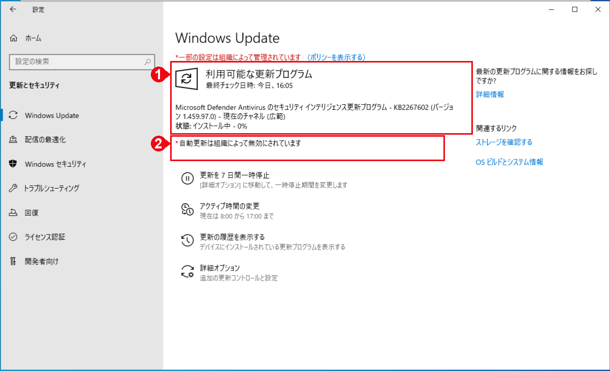
画像の見方
① SSM Install完了後の手動確認で、Windows UpdateがKB2267602を検出してインストールを開始したことを確認します。② 自動更新は組織のポリシーで無効であることを確認します。この更新はSSMの実行終了後に手動の「更新プログラムのチェック」で開始されたため、SSMが適用した更新として記録しない

画像の見方
① Windows Updateから手動でインストールされたKB2267602のバージョンと成功表示を確認します。SSMのInstall結果とは区別して記録する
注意：実行前のWindows Update操作
SSMによる適用前後を比較する場合、Install前にWindows Updateの「更新プログラムのチェック」を押すと、Windows Update側でダウンロードやインストールが始まり、SSMの適用結果と混在する可能性がある。事前確認では画面表示と既存履歴だけを記録し、手動チェックはSSM実行後の切り分け作業として実施する
19. 今回の追加取得項目
- Scan単独テストに対応するS3出力
- 使用するWindowsパッチベースラインの詳細
- Scan単独テストのRun Command出力（
OperationType=Scan、RebootOption=NoReboot） - Maintenance Windowの対象ノードが1台であること
- Scan実行に対応するComplianceとS3出力
- 実際に不足パッチがある状態でのInstall、適用KB、必要時の再起動、Online復帰、再Scanおよび業務確認
- Install後のWindowsサービス、イベントログおよびアプリケーション疎通
20. AWS公式参照先
- 出典：Find a shared AMI for use with Amazon EC2
- 出典：Find an AMI that meets the requirements for your EC2 instance
- 出典：Find the latest AMIs using Systems Manager parameters
- 出典：Calling AMI public parameters in Parameter Store
- 出典：Find AMIs with the SSM Agent preinstalled
- 出典：Manually install SSM Agent on Windows Server
- 出典：Configure instance permissions required for Systems Manager
- 出典：AmazonSSMManagedInstanceCore
- 出典：AmazonSSMFullAccess
- 出典：AmazonEC2RoleforSSM
- 出典：Assign tasks to a maintenance window using the console
- 出典：CloudWatchAgentAdminPolicy
- 出典：Working with Patch Manager resources using the console
- 出典：Creating and managing patch groups
- 出典：AWS-RunPatchBaseline
- 出典：Assign tasks to a maintenance window using the console
- 出典：Monitoring Systems Manager status changes using Amazon SNS notifications
- 出典：Predefined and custom patch baselines
- 出典：Creating a custom patch baseline for Windows Server
- 出典：Viewing AWS predefined patch baselines
- 出典：How patches are installed
- 出典：Microsoft Defender Antivirus security intelligence and product updates